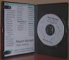
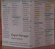

|
 |  |
Report Manager edición estándar incluye las siguientes características adicionales.
| CD-ROM con elegante caja |
| Tarjeta impresa del árbol de herencia de objectos Report Manager |
| Instrucciones impresas de instalación |
| Soporte en la instalación vía e-mail (30 díass) |
| Ejemplos de informes adicionales usando la base de datos Firebird SQL |
| Documentación completa en su disco duro. |
|
Borland Database Engine (Windows) Instalación con los controladores
|
| Base de datos Firebird SQL |
| Otras utilidades: IBAccess |
| Todos los archivos necesarios para su instalación en Linux y Microsoft Windows |